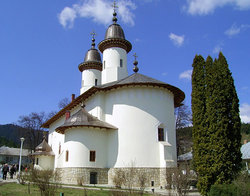

 Mănăstirea Văratec este o mănăstire ortodoxă de maici din România, situată într-o poiană de la poalele munților, în satul Văratec din comuna Agapia (județul Neamț), la o distanță de 12 km de orașul Târgu Neamț și la 40 km de municipiul Piatra-Neamț. Este cea mai mare mănăstire de maici din România, aici viețuind peste 400 maici.
Mănăstirea a fost fondată în anul 1785 de către schimonahia Olimpiada, împreună cu duhovnicul Iosif. În această lucrare, maica Olimpiada a fost sfătuită și îndrumată de Paisie Velicicovschi, starețul Mănăstirii Neamț. Trecută sub administrarea Mănăstirii Agapia din apropiere, Mănăstirea Văratec a devenit mănăstire independentă în anul 1839.
Scurt Istoric
Fondarea Mănăstirii Văratec este legată de numele Bălașei Herescu (1757-1842), fiica preotului Mihail de la Biserica "Sf. Nicolae Domnesc" din Iași. Aceasta viețuia ca rasoforă în Schitul Topolița din apropiere, cu numele de sora Olimpiada.[3] Ea a dobândit mai multe terenuri în poiana Văratec, de la marele vistiernic Deleanu și de la pădurarul Ion Bălănoiu.
Sfătuită de starețul Paisie Velicicovschi de la Mănăstirea Neamț, care urmărea desființarea schiturilor mici de călugărițe aflate la marginea orașelor și satelor și concentrarea lor în câteva mănăstiri mai mari, izolate de lume, maica Olimpiada a întemeiat, între anii 1781-1785, o mică sihăstrie în poiana Văratec. În iunie 1785, Olimpiada, împreună cu duhovnicul Iosif, au început construirea unei biserici de lemn cu hramul "Adormirea Maicii Domnului". Lângă biserică, s-au clădit și chilii în care s-au stabilit mai multe călugărițe, fondându-se astfel Schitul Văratec.
În anul 1803, dorind să înființeze un Seminar de preoți la Mănăstirea Socola din Iași, mitropolitul Veniamin Costachi al Moldovei a dispus ca cele vreo 50 de maici de la Socola să se mute la Mănăstirea Agapia, care a devenit mănăstire de maici. Printr-o hotărâre a mitropolitului din 10 iulie 1803, semnată și de boierii din Divanul domnesc, Schitul Văratec a fost unit cu Mănăstirea Agapia, dar pentru scurtă vreme.
Mănăstirea Văratec a fost afectată de un incendiu în noaptea de 10/11 iunie 1900, arzând atunci cea mai mare parte a chiliilor și acoperișul bisericii mari. După incendiu, s-a refăcut acoperișul bisericii doar cu două turle, turlele de lemn nefiind reconstruite. De asemenea, s-a construit actualul complex de clădiri din incinta mănăstirii, singurul corp păstrat în forma inițială fiind doar zidul înconjurător, ridicat în perioada 1808-1812. Paraclisul "Sf. Nicolae" a fost refăcut între anii 1903-1909, catapeteasma și interioarele sale fiind pictate de ieromonahul Eftimie Obrocea de la Mănăstirea Ciolanu.
Imagini de la Mănăstirea Văratec
Viețuitori celebri
În diferite perioade, la Mănăstirea Văratec au viețuit mai mulți teologi și oameni de cultură. Printre aceștia sunt de menționat următorii:
poeta Veronica Micle (1850-1889) s-a retras la Văratec la două săptămâni de la înmormântarea poetului Mihai Eminescu. A locuit în casa Fevroniei Sârbu, obișnuind să se plimbe prin împrejurimi. Avea des migrene și era deprimată. În noaptea de 2/3 august 1889, poeta s-a sinucis cu arsenic. Doctorul Taussig a pus diagnosticul de congestie cerebrală și astfel Veronica Micle a fost înmormântată la 5 august în cimitirul mănăstirii, la umbra unui brad. Pe crucea modestă de lemn, a fost încrustat un epitaf scris de învățătoarea Maria Bănulescu:
În singurătatea mănăstirii
Sub bolta cerului albastru,
Suflet stingher al nemuririi
Lucești ca cel mai mândru astru.
protosinghelul Nicodim Măndiță (1889-1975), autor de cărți de învățături duhovnicești. A fost duhovnic la Văratec în perioada 1945-1962.
episcopul Partenie Ciopron (1896-1980), fost episcop al Armatei (1937-1948) și al Romanului și Hușilor (1962-1978). După 15 ani de episcopat în Eparhia Romanului și Hușilor, s-a retras la 1 ianuarie 1978 la Mănăstirea Văratec, unde a decedat la 28 iulie 1980. A fost înmormântat în cimitirul mănăstirii.
arhimandritul Bartolomeu Anania (1921-2011), viitor mitropolit al Clujului, Albei, Crișanei și Maramureșului, s-a pensionat în anul 1982 din funcția de director al Institutului Biblic și de Misiune al Bisericii Ortodoxe Române, retrăgându-se la Mănăstirea Văratec pentru a se dedica scrisului. El a primit un apartament în casa episcopului Partenie Ciopron. Acolo a scris multe poezii și volumele de proză "Rotonda plopilor aprinși", "Amintirile peregrinului Apter", "Greul pământului" și "Cerurile Oltului". La Văratec a început diortosirea și adnotarea Sfintei Scripturi, lucrând până noaptea târziu.[19] A locuit aici până la alegerea sa ca arhiepiscop al Vadului, Feleacului și Clujului, la 21 ianuarie 1993.

{kind=link}